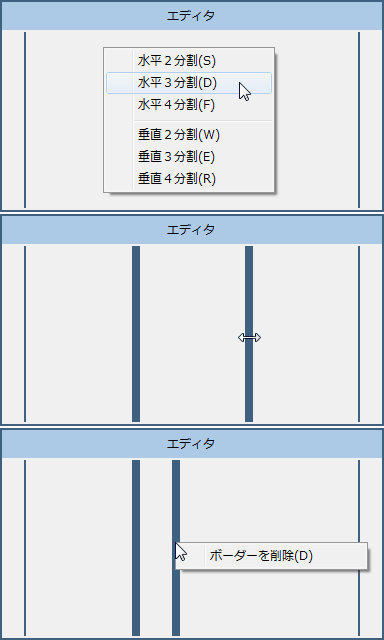
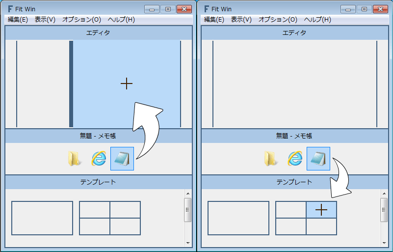
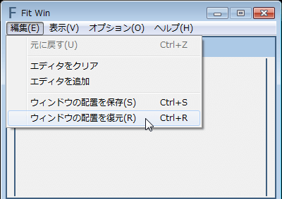
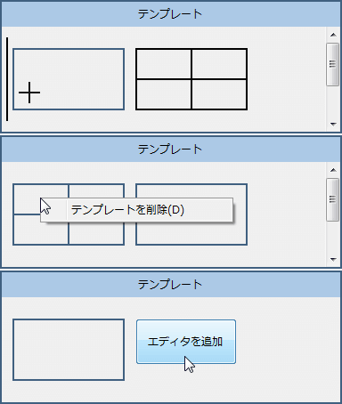
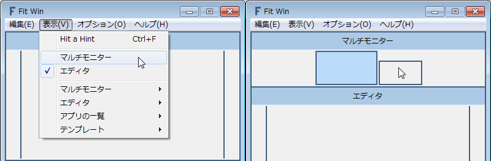
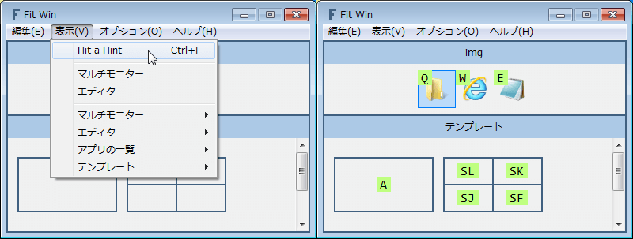
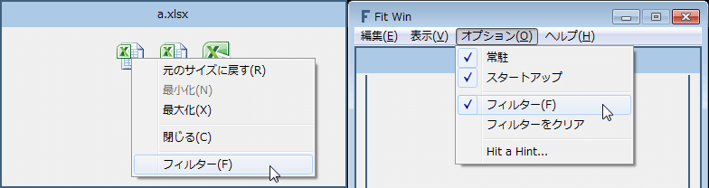

ウィンドウの移動・サイズ変更ツール
簡単な操作で強力なウィンドウの移動・サイズ変更
マルチモニターでも簡単
キーボードのみの操作でも簡単
テンプレートをクリックすると、そのテンプレートをエディタで開きます

エディタを右クリックして分割
ボーダーをドラッグして移動
ボーダーを右クリックして削除
アイコンをエディタやテンプレートにドラッグ＆ドロップして移動・サイズ変更

起動しているすべてのウィンドウの配置を保存します
その後、ウィンドウを移動・サイズ変更しても保存した配置にすぐに戻せます
エクスプローラ間でドラッグアンドドロップをしたいが、ウィンドウが重なっていてできないときなどに、
ウィンドウを移動させてもすぐに戻せます

アイコンを左クリックして、ウィンドウをアクティブ
アイコンを右クリックして、ウィンドウを操作

テンプレートをドラッグ＆ドロップして並び替え
テンプレートを右クリックして削除
エディタを追加ボタンを押して、エディタの編集をテンプレートに追加

モニターをクリックして選択
アイコンをドラッグ＆ドロップすると、選択されたモニターに移動・サイズ変更されます
マルチモニターが非表示のときは、プライマリモニターに移動・サイズ変更されます
アイコンに表示されている文字列をタイプして選択
テンプレートに表示されている文字列をタイプして移動・サイズ変更
例えば、メモ帳をモニター右上に移動・サイズ変更するときは、ESKとタイプします

| 閉じる | Esc |
| タイプを元に戻す | Backspace |
| 次のモニターを選択 | Space |
| 前のモニターを選択 | Shift + Space |
| 右のアイコンを選択 | →, Tab |
| 左のアイコンを選択 | ←, Shift + Tab |
| 上のアイコンを選択 | ↑ |
| 下のアイコンを選択 | ↓ |
| ウィンドウをアクティブ | Enter |
| ウィンドウを操作 | ;, Apps |
指定のウィンドウをアプリの一覧に表示しないようにします
最大化でしか使わない・電卓はモニターの中央で固定など、
移動・サイズ変更しない・できないアプリを表示しないようにします

ダウンロード 0.3.20140712
バグの報告・要望・感想などぜひ！
0.3.20140712
ウィンドウの配置を保存・復元する機能を追加
フィルター（指定のウィンドウをアプリの一覧に表示しない）機能を追加
マルチモニターの選択されているモニターを記憶するように変更
デフォルトのテンプレートを１つ追加
アイコンを微修正
0.2.20140702
常駐機能を追加
新しいバージョンの通知機能を追加
HaH 表示時にアイコンのコンテキストメニューを表示するショートカットにアプリケーションキーを追加
起動時にテンプレートの HaH が表示されないバグを修正
0.1.20140602
公開